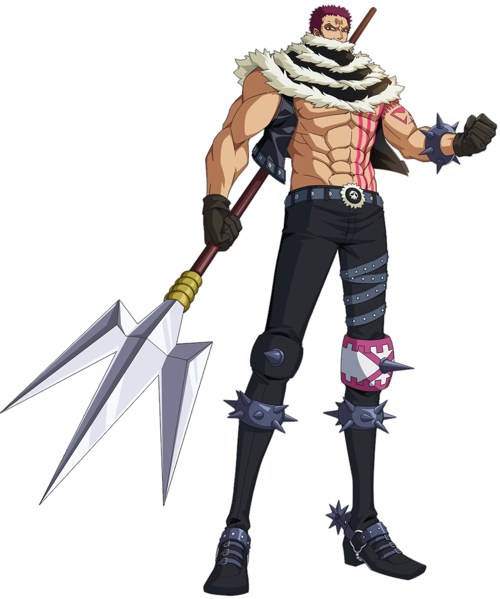
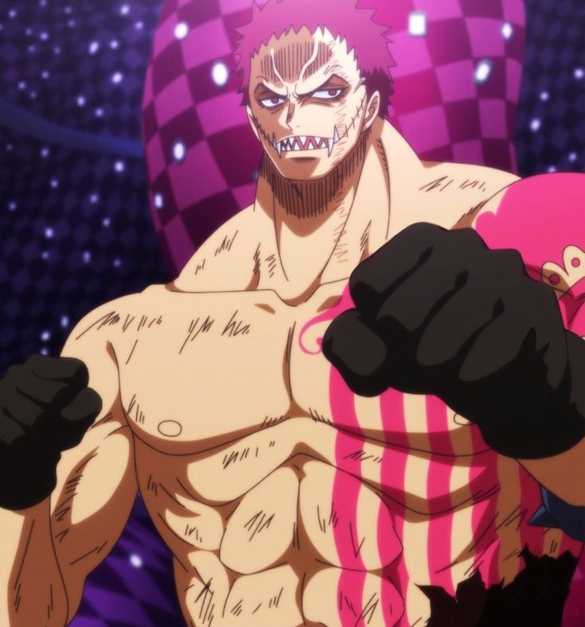

quem é Katakuri e qual é sua história?
Charlotte Katakuri é o terceiro filho de Charlotte Linlin, conhecida por Big Mom e também um dos três comandantes dos piratas da Yonkou, Katakuri é o pirata mais forte da sua tripulação e também o mais respeitado por ser um homem estremamente forte e frio contra os seus adverários.
Quando Katakuri tinha 10 anos, diziam boatos que ele nunca abaixava a guarda, sempre alerta, e também tão forte que dez do seu nascimento ele nunca sequer encostou as suas costas no chão até em dias de hoje. Katakuri é conhecido por ser um homem frio e impiedoso, para que todos o temiam e seus irmãos e família ficariam protegidos. Mas é um mistério da família o que está por trás do cachecol que esconde a sua boca.
A sua força e fama
poder de Akuma no mi
O Katakuri é um dos usuário de frutas, que dam poder aqueles que comem a fruta, as frutas são nomeadas como "frutas do Diabo" por fazer qualquér usuário perder a capacidade de nadar.:
o principal poder de Katakuri vem de uma fruta especial Mochi Mochi no Mi, que lhe dá poderes de Mochi(Massa) para o osuário, mas envez de lhe dar propriedades de massa, ele tem acapacidade de elemento, sendo invunerávle aos ataques e tiros normais. Por ter despertado o verdadeiro poder de sua Akuma no Mi o Katakuri pode manipular qualquer objeto inorgânico a sua volta, transformando ele em Mochi.
Haki
ele é um dos poucos personagens que têm acesso aos três Hakis (que são outra fonte de poder contra os usuário de Akuma no mi):
- Haki do Rei: Uma habilidade rara que pouco são capazes de usar. O osuário utiliza a sua vontade(equivalente a de um Rei) contra os outros. Aqueles com força de vontade mais fraca, acaba sendo desmaiado ou derrotado.
- Haki de observação: Uma habilidade que a proporção de visão do osuário fica mais avançada. Mas o haki od Katakuri é especial, que lhe dá a capacidade de visão do futuro de 5 segundo
- Haki do Armamento:Uma habilidade que dá uma "Armadura" invisível ao usuário que aprimora dano em idenpedente usuários de Akuma no mi ou não usuários de Akuma no mi. O Haki de Armamento pode aprimorar armas tamém.
sua Fama da tripulação
Charlotte Katakuri é famoso em One Piece por ser o guerreiro mais forte entre os filhos de Big Mom, ostentando uma recompensa de 1 bilhão de Berrys e o título de um dos Três Comandantes da Doçura. Katakuri cultivava uma imagem de guerreiro perfeito e intocável para proteger sua família, mantendo a fama de que suas costas nunca haviam tocado o chão em toda a sua vida mesmo sabendo da verdade.
A verdade portrás do cachecol
Por trás de tantos boatos o Katakuri sempre foi uma pessoa normal, mesmo obtido uma força incomparável.
Aos três anos seus hábitos alimentares fazem com que sua boca se expanda, causando um rasgo em suas bochechas, deixando uma grande cicatriz na sua boca e por causa da sua aparência ele era constantemente evitado e sofria bullying, mas como era forte conseguia se defender.
a lguns bullies que ele havia batido resolveram se vingar, cortando o rosto de sua irmã. O garoto ficou tão enfurecido que atacou o grupo. Após resolvido, ele foi culpado pelo ataque devido sua ingenuidade, com isso Katakuri decidiu se tornar um homem frio e impiedoso, para que todos o temiam e seus irmãos e família. Por fim, ele decidiu esconder sua boca com um cachecol.
no fim das contas ele só tentava ser um homem dos boatos que todos diziam só para proteger a sua família e também para não magua-los.
as aparência do dabi éu representado na imagem abaixo:
Charlote
Katakuri

aparência normal.
Katakuri
lutando
contra o Luffy

Sem o cachecol.
por que eu gosto do Katakuri?
Eu gosto do Katakuri por que ele é uma imagem clara de um irmão mais velho, a luta contra o Luffy, ele sempre o impediu de ferir os seus irmãs, e isso foi uma declaração clara de amor á família. O personagem foi um dos poucos que me inspirou no anime apenas pelo devasto código de honra e respeito pelo adversários e pelo uso de seu poder.